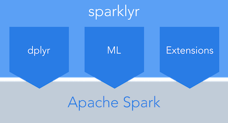

Building a Data Science Platform for R&D, Part 3 - R, R Studio Server, SparkR & Sparklyr
Posted on Mon 22 August 2016 in data_science • Tagged with big data, AWS, data processing, spark

Part 1 and Part 2 of this series dealt with setting up AWS, loading data into S3, deploying a Spark cluster and using it to access our data. In this part we will deploy R and R Studio Server to our Spark cluster’s master node and use it to …
Continue reading